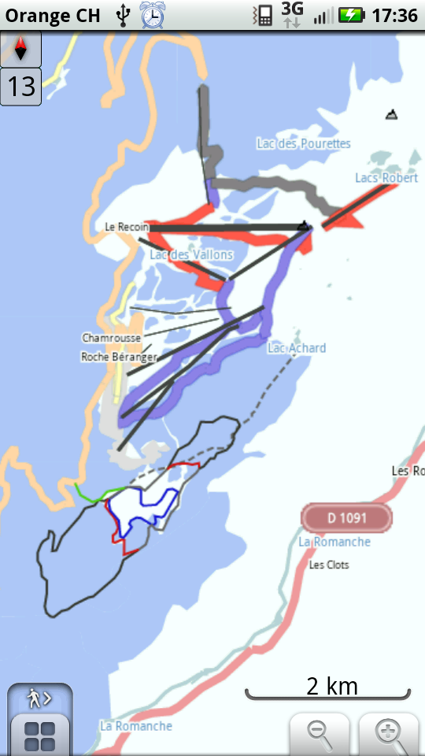

Load worldwide ski pistes on your phone and display them with Osmand (BETA)
- Download the latest pistes extract here, then copy it in /osmand/ on your phone sdcard, or directly in Osmand downloads
- Choose the 'winter+ski' style as Vector renderer in Osmand settings
- Enjoy.
OsmAnd Ski app
You can also use this experimental app to install ski trails in OsmAnd. OsmAnd Ski (beta)
And give back !
- Record your GPS track when skiing on a unknown piste with Osmand
- Create an OpenStreetMap account
- Upload your track to osm
- Edit the map by tracing the piste over your GPS track
- Come back and download the new extract after a few days, it's there for everyone!
It will take you maybe a couple of hours to get into Openstreetmap, but then it's easy. Keep in mind this is how all these data came into your phone!
Thanks to
 |
 |
|
| OSM | Osmand.net | www.pistes-nordiques.org |
On last update: